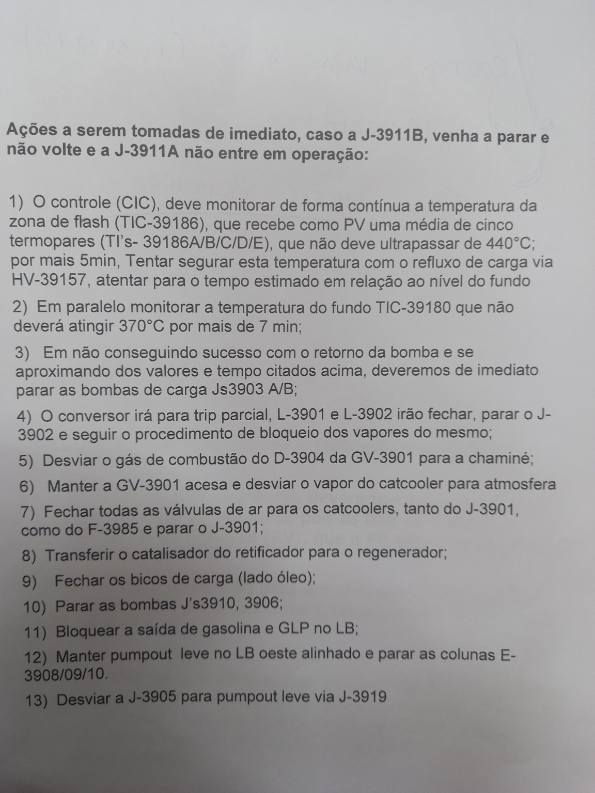

01
Perda de resfriamento
Sem recirculação, o calor do efluente do conversor deixa de ser removido pela corrente de borra nos C-3904, C-3907 e C-3933. O desequilíbrio térmico eleva a temperatura.
TREINAMENTO TÉCNICO · CENÁRIO DE EMERGÊNCIA
J-3911B parada sem retorno, J-3911A indisponível. Compreenda o balanço térmico, avalie as 13 ações documentais e pratique decisões do operador de controle com um simulador dinâmico.
Critério de emergência da imagem
Critério de emergência da imagem
01 / ENTENDA O MECANISMO
A J-3911 mantém mais do que o movimento de líquido: ela dá suporte à lavagem das chicanas, remoção de energia da torre e homogeneização térmica do fundo.
Toque nos pontos ✦ para aprofundar. As linhas animadas representam fluxo de forma conceitual.
Sem recirculação, o calor do efluente do conversor deixa de ser removido pela corrente de borra nos C-3904, C-3907 e C-3933. O desequilíbrio térmico eleva a temperatura.
Menor retorno às chicanas prejudica o contato gás–líquido e a retenção de finos de catalisador e pesados, favorecendo incrustação e arraste para seções superiores.
A redução da circulação torna a borra menos homogênea. Temperatura elevada, partículas de catalisador e permanência prolongada aumentam o risco de coque no fundo.
Representa o ambiente de contato entre vapores quentes e refluxo. A PV do procedimento é a média de cinco termopares, não o maior valor individual. Acompanhar também TI-39186A/B/C/D/E quando disponíveis.
Representa a condição térmica do inventário pesado. O retorno inferior FIC-39163 tem a função de homogeneizar e sub-resfriar, limitando zonas quentes e tendência ao coqueamento.
02 / LABORATÓRIO DE PROCESSO
Modifique bombas, refluxo alternativo e carga. Observe a queda rápida do LIC-39152, a elevação térmica e o efeito da retirada coordenada de carga. As taxas de variação são exclusivamente didáticas.
No modo automático, cada 0,85 segundo corresponde a 15 segundos do cenário; “+15 s” avança um passo. O modelo usa equações simplificadas, não curvas identificadas da planta; valores, tempos de evolução e taxas de redução do LIC-39152 são ilustrativos. O sentido de queda no cenário reproduz a observação relatada para a U-39, sem ser uma calibração quantitativa da planta.
O procedimento descreve PV como média de cinco termopares. Injete um desvio em um canal e compare a PV com a maior leitura: alterações na medição não mudam a temperatura física do modelo.
Sem J-3911A/B, caem FIC-39162 e FIC-39163. As chicanas deixam de receber a borra resfriada que molha, lava e condensa hidrocarbonetos pesados. Uma parcela maior permanece no vapor ascendente, enquanto o líquido quente no fundo pode vaporizar. O resultado operacional relatado é queda abrupta do LIC-39152, simultânea ao aumento térmico.
→ Tendência hipotética: próximo do equilíbrio
Neste cenário, a queda do LIC-39152 após perda dos refluxos é a tendência inicial. Se a HV-39157 estiver disponível e fornecer capacidade efetiva de refrigeração/condensação, o nível pode deixar de cair ou recuperar-se lentamente; isso depende também da carga, energia residual, circulação restabelecida e pumpout. O simulador apresenta a resposta hipotética com atraso. Abertura da HV não comprova vazão nem proteção real. A retirada pela J-3912 não é presumida com J-3911 indisponível.
Compare a condição do acionamento com a vazão efetiva dos dois retornos. Percentuais representam apenas o modelo.
03 / PROCEDIMENTO INTEGRAL
O conteúdo documental é preservado, acompanhado de explicações de processo, variáveis a observar e dependências de segurança.

Fonte: fotografia enviada para este estudo. Confirmar revisão, data, autoria e aprovações vigentes antes do uso operacional.
04 / ENGENHARIA APLICADA
Relação física entre transferência de calor, equilíbrio de fase, circulação hidráulica, separação e coqueamento.
05 / TREINAMENTO CIC
Diagnostique tendências, escolha intervenções e observe como decisões anteriores alteram as condições seguintes.
06 / AVALIAÇÃO DO OPERADOR
Questões de diagnóstico, hidráulica e integração do conversor, com alternativas tecnicamente plausíveis, ordem embaralhada e justificativas.
07 / BASE DOCUMENTAL E LIMITAÇÕES
Distinção entre dados confirmados, texto da fotografia e hipóteses aplicadas apenas à animação.
Fotografia com as 13 ações para parada da J-3911B sem retorno e indisponibilidade da J-3911A.
Dados usados: média de cinco termopares; 440 °C/5 min; 370 °C/7 min; HV-39157; sequência 1–13.
Seção 8.7.2.1, páginas 51–52; seção de refluxos e sistema de vapor; quadro de monitoramento, página 136. A derivação para J-3912 parte de borra após C-3933; sua vazão com falha da J-3911 requer verificação hidráulica.
Dados usados: rota da borra J-3911 → C-3904/C-3907 → C-3933 → FIC-39162/63; faixas térmicas e finalidade de lavagem/sub-resfriamento.
Não foram fornecidos P&IDs atualizados, matriz de causa e efeito, curvas das bombas, capacidade térmica do refluxo HV-39157, filosofia do DCS nem dados de tempo de resposta.
Consequência: a simulação não representa o comportamento dinâmico real da U-39.